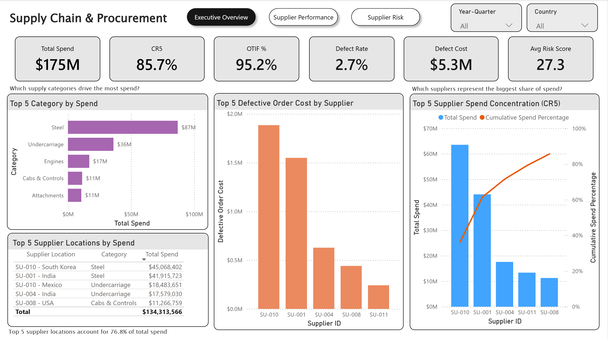
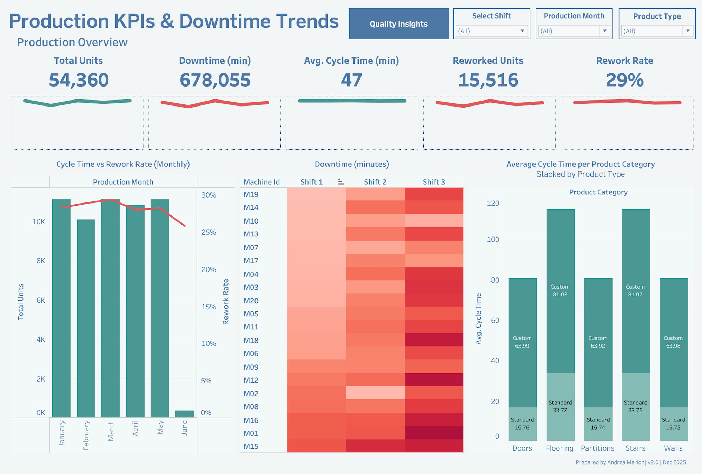
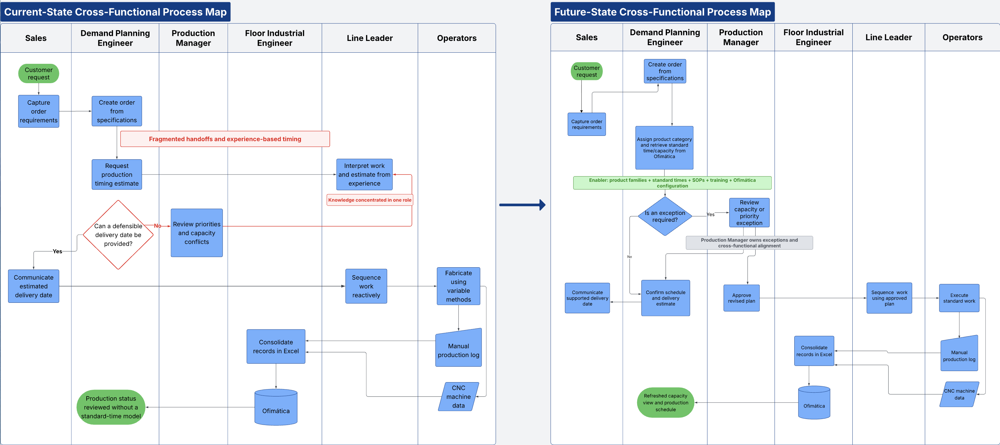
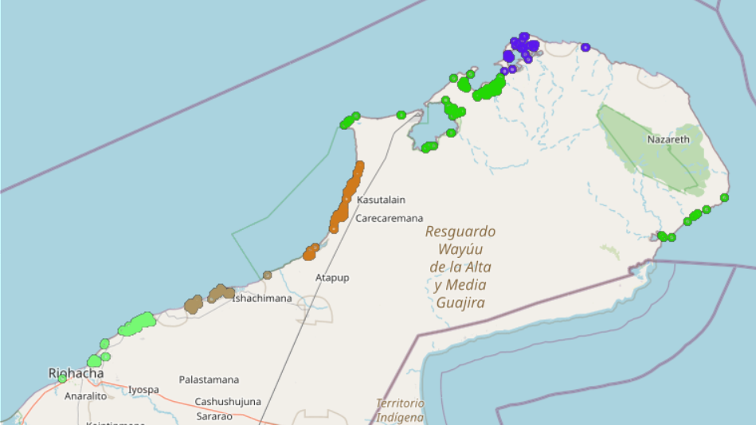

Featured Work
DFW Network Capacity & Route Planning
Airline Network Analytics & Decision Support

Tableau • PostgreSQL • SQL • Dimensional Modeling • Data Validation • Capacity Planning
238.5M Passengers | 287.7M Seats | 82.91% Load Factor | -1.35% YTD Passenger Growth
End-to-end airline network planning solution designed to evaluate DFW passenger demand, seat capacity, load factor, route growth, departure performance, and reporting-carrier activity. The project uses a layered PostgreSQL pipeline, dimensional modeling, SQL, and Tableau to transform BTS T-100 data into an interactive decision-support environment.
The analysis identifies different route planning conditions—including capacity pressure, capacity ahead of demand, potential excess capacity, and markets requiring further investigation—helping distinguish where capacity review may be warranted rather than applying a single network-wide response.
Supply Chain & Procurement Intelligence
Cross-Platform Procurement Analytics & Decision Support
Power BI • Tableau • Python • PostgreSQL • Power Query • DAX • Data Modeling • Data Validation
$174.9M Total Spend | 85.7% Spend Concentrated in Top 5 Suppliers | 95.2% OTIF | 2.7% Defect Rate
Cross-platform BI solution designed to evaluate procurement spend, supplier concentration, delivery performance, quality, and supplier risk. The same business problem was implemented through two different analytical architectures: a Power BI workflow using Power Query, dimensional modeling, DAX, and validation, and a Tableau workflow using SQL and an analysis-ready dataset.
The analysis identified strong overall delivery performance alongside significant supplier concentration and location-level quality and risk exposure, providing a decision-support view for supplier performance reviews, sourcing priorities, and risk management.
Production Line Intelligence & Rework Risk Modeling
Industrial Operations Analytics, Predictive Quality & Improvement

SQL • PostgreSQL • Tableau • Python • Machine Learning • Data Modeling • Lean
54,720 Production Units | 20 Machines | 3 Shifts | ~9% Rework | ~91% Rework Recall
End-to-end industrial analytics project connecting simulated shop-floor data, relational modeling, SQL, Tableau, and machine learning to analyze throughput, cycle time, downtime, quality, and rework risk. The project demonstrates how operational data can move from raw production records through a structured analytical layer into management reporting and predictive quality analysis
The analysis identified differences across product families, machines, and shifts and translated those findings into a designed improvement system involving risk-based quality checks, standard work, machine scorecards, shift controls, and escalation thresholds. These improvements are modeled recommendations; physical implementation and financial validation were outside the project scope.
Laminaire Process Improvement Case Study
Operational Improvement, Standardization & Implementation Leadership

Process Improvement • Work Measurement • Capacity Planning • Change Management • ERP Requirements • Cross-Functional Leadership
Retrospective case study documenting an operational-improvement initiative I led in custom HVAC manufacturing, where production timing and delivery estimates depended heavily on individual experience. The work combined Gemba investigation, process mapping, time studies, statistical sampling, product classification, and standard-time development to create a repeatable planning method.
Unlike the simulated portfolio projects, this initiative progressed through pilot validation and operational implementation: planning logic was incorporated into standard times, SOPs, work instructions, training, Excel analysis, and Ofimática system requirements, improving capacity and delivery visibility while reducing dependence on individual knowledge.
Additional Work
Mapping Water Bodies for Drought Relief

Satellite Data • NDWI Trends • Drought Hotspots • Public-Sector Analytics
This project turns satellite and geospatial data into a drought-relief planning tool for La Guajira, Colombia. Using NDWI, clustering, water-proximity analysis, and interactive maps, the project identifies drought-prone zones and evaluates how accessible nearby water sources may be.
The analysis showed persistent dryness across the 2020–2024 NDWI trend, with average monthly NDWI remaining below the 0.2 water-presence threshold. DBSCAN revealed one dominant drought-related cluster with 52,689 points, while smaller clusters pointed to localized drought pockets that may need targeted intervention.
The project connects environmental analytics with public-sector decision support: helping translate raw satellite data, water-body detection, and drought patterns into insights that could support resource allocation, emergency planning, and long-term water-management strategy.